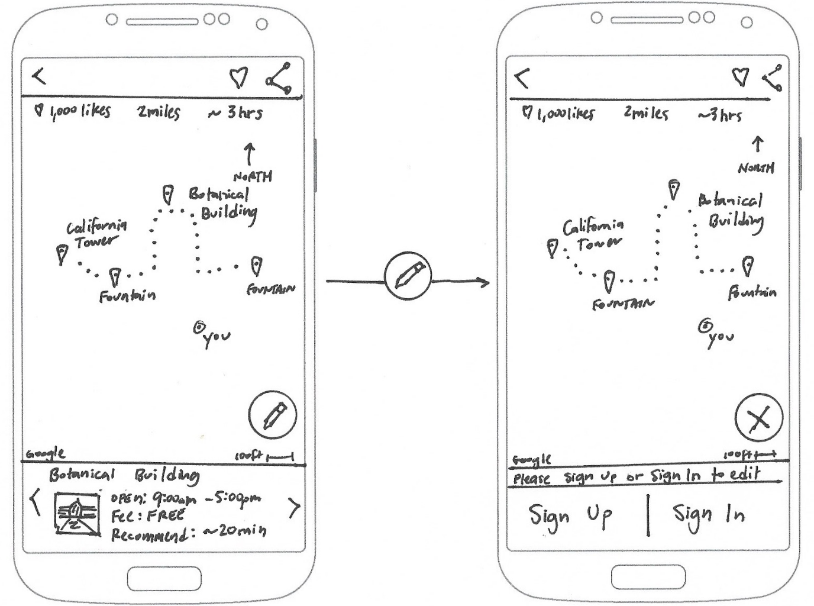

Wander
Hydrocephalus Association Walk
UX Research & Design: streamlined customer checkout experience
UX Research and Design - Neil Ranada
Project time - 3 months
Project location - San Diego, CA
Summary
Have you ever nearly quit or abandoned an online checkout because things didn’t go as smoothly as you’d like? I conducted a study of a website for the Hydrocephalus Association, a well-respected non-profit organization dedicated to education and research to end a rare medical condition.
The goal was to create a streamlined customer checkout experience for donating to medical research.
Problem
Tests of the Hydrocephalus Association (HA) Walk website revealed points where the checkout process was either too long, confusing, or asked too much information.
Solution
Make it clear where someone can initiate a donation and make the checkout process smooth for them.
Discovery
I was inspired to conduct this study for my friend’s daughter, Amiyah, who was born with hydrocephalus. Each year Amiyah’s mom leads a team to participate in the Hydrocephalus Walk held in her city. The event is a combination of online fundraising culminating in a walk event organized by the Hydrocephalus Association.
Amiyah's Hydrocephalus Walk post board. Photo courtesy of the Quinto family.
Hydrocephalus is the buildup of fluid around the brain resulting in an increased pressure in the head. It affects a wide range of people. For every 1,000 babies born in the U.S, one to two will have hydrocephalus. Hydrocephalus is the most common reason for brain surgery in children.
The thought of someone nearly abandoning the donation process because they didn’t have a smooth checkout experience bothered me. I wanted to investigate ways User Experience design could improve the HA Walk website.
Research
I started my research with a survey posted online to various social media platforms and public forums. I asked general questions about their last donation experience.
Here are my key findings from the 18 responses:
- 83% said the one main reason for donating was to help people
- When asked to select one issue from a list of options people felt could use improvement, “donation process” was one of the top issues
- 83% said they used laptops to browse fundraising websites
Here is a selection of comments from the survey
- “Often times, the amount of time it takes to log into a website/type in credit card info takes long enough that I get discouraged from donating.”
- “The donation form asked for too much information.”
- “The different types of donation options they offered were confusing and poorly-worded.”
What I learned from survey results
People like to give money to help other people. But unfortunately, some people encounter friction points that leads them to nearly abandoning the donation process.
Finding an opportunity to solve a problem
- Do people experience frustration when trying to donate on the HA Walk website?
- Who is experiencing frustration?
- What do they need to improve their customer checkout experience?
Early User Testing
I began with a click test using Usability Hub giving people the following scenario:
"Your friend’s daughter, Mary, has a medical condition. How would you donate to her fundraiser?"

Open Usability Hub test results in another tabopen_in_new
Of the 15 responses, most people were able to identify the buttons to start the donation process: “Donate to a Walker” and “Give.” However, both of these buttons are misleading. The “Donate to a Walker” button leads to a page that lets you search for a person who is registered to walk in the event and is raising funds on behalf of a person with hydrocephalus. The “Give” button leads to a page for making a general donation.
Neither button allows you to search for the person who has hydrocephalus, whom you are ultimately trying to support with the given scenario.
Early Usabilty Testing
I went further by creating a fundraising account on the HA Walk website to test the search and donation process, with the bonus of making actual contributions.
I conducted a usability test with one person who was interested in donating. I asked the tester to search and donate to a particular person with hydrocephalus. Note: the video recording is not available due to a non-disclosure agreement with the tester.
Here are key observations of the tester:
- Unable to find a fundraising campaign using the name of a person with hydrocephalus
- She felt filling out the payment information form lengthy
- Became flustered when she realized that she accidentally subscribed to email notifications after completing the checkout process
- Surprised that clicking the “Continue” button on the payment information page and charged her credit card
- Credit card was double-charged after jumping too quickly back to the payment information form after clicking “continue” despite a warning not to do so
With this single tester, it was apparent that there were areas of the customer checkout process that needed improvement. It also reinforced the point found in the Usability Hub test from earlier that there needs to be a way to search for a campaign using the name of a person with hydrocephalus.
User Personas
I identified three people to interview and used them as models to create the User Personas. I focused on learning about their past experiences with donating.
The User Personas represent the varying degrees of relationship a donor can have with a person with hydrocephalus. Often times when people donate, it’s because they know someone who will benefit, whether they are a close family member or an acquaintance.


Open PDF file for User Personas in another tabopen_in_new
Bryan is the primary persona and the focus for the re-design. As an acquaintance, we should ensure his first donation is seamless and pleasant so that he can quickly complete it and hopefully encourage him to support again in the future.
For the initial re-design, we are less concerned about the mom of the person with hydrocephalus and any family friends. They are likely to go all the way through with making a donation regardless of the difficulty level of the checkout process. As secondary personas, they do have goals worth focusing on at a later time.
Top 3 goals of the User Personas
- Be able to choose how they donate (general donation vs. specific person)
- Easily donate with minimal information required from them
- Not being confused between the options of donating versus joining a walk team.
I used these three goals as the focus for my design decisions.
Competitive Analysis
I analyzed the strengths and weaknesses of travel app competitors. I identified six travel apps: TripAdvisor, Google Trips, Walc, FieldTrip, Cool Cousin, and Triposo.
I created matrixes such as the one below to assess the strengths, weaknesses, opportunities, and threats of each app (SWOT analysis).

View analysis matrixes for other apps in another tabopen_in_new
I also downloaded Triposo. Out of the list of travel apps I analyzed, Triposo had the most advanced tool for planning a walking itinerary.
Screenshot from Triposo iPhone app.
Top three strengths to include in the design:
- Crowd-sourcing to provide self-sustaining content production
- Voting system to let people decide what is most helpful
- Integration with Google Maps because its database is extensive and people trust it
Top three weaknesses to avoid in the design:
- Overwhelming number of features and information
- Computer generated routes that are unsafe or do not make sense
- Making it difficult for people to edit a path and change points of interest
Field research at Balboa Park, San Diego
I also took advantage of the fact that I live in San Diego, a major tourist destination. I spent several mornings and afternoons at Balboa Park. I hung out next to maps posted throughout the park. I casually interviewed people to find out what they were searching. I also wanted to see what they thought was helpful, and what was frustrating.
Time tested way of finding directions
People still rely on friends, or even strangers, to find directions. This behavior reinforced the crowd-sourcing and social approach in the design.
Sometimes the best way to find where you’re going is to ask someone who can draw directions for you on a paper map. With this in mind, I needed to design a digital version of this time-tested method of getting directions.
It also occurred to me that not everyone walks on paths. Sometimes people move around on wheels: wheelchairs, scooters, bikes, skates, etc. It reminded me to push for inclusive design.
Central fountain, Balboa Park, San Diego. Photo by Neil Ranada.
Meeting research goals
- Is there a need for a tool to make it easier to plan walking paths?
Yes - Who needs it?
People who plan travel itineraries like the three user personas. - What features do they need?
A platform that allows people to create, select, edit, vote, and share walking paths.
Design
After conducting user research and defining the problem, I was ready to move forward and create design solutions.
User Stories
I created a spreadsheet with a list of tasks to meet the goals of the user personas.
"As a __________, I want to __________ so that I can __________."

Open Google Sheets for User Stories in another tabopen_in_new
User Flows
I created User Flows to visually depict how people completed each task set out in the User Stories.
Search flow

Map view flow

Onboarding flow

Open Draw.io for User Flows in another tabopen_in_new
Paper Wireframes
I spent the majority of my time creating wireframes to focus on the functionality of the travel app. I sketched using pen and paper which let me put my design ideas down quickly. For inspiration, I looked to patterns found in popular apps such as TripAdvisor and Airbnb.
I went through each user story and wrote the task in the top left corner of each page to focus on the particular problem I needed to solve.
Here are a couple of early wireframe sketches attempting to solve for the following user story:
"As a user...I want to search recommended paths...so that I can find the best way to see popular sights."

Flowing from a collection of cards to a map.

Flowing from list view to a page with information and photos for a point of interest.
User testing later revealed that I needed to use a blend of the two ideas above. A list for easier skimming instead of cards. And a map view instead of an info page with photos because that’s what testers expected after selecting a path.
The most challenging problem I focused on was how people could seamlessly make changes to customize their walking path. Here is a progression of wireframe sketches designing for the user story:
“As a user…I want to change the path on my map…so that I can modify my path.”

Early version.
Later version.
Testing revealed that most people could not associate the unlabeled Floating Action Button with making changes to a path. I discuss this issue later under the "Testing" section.
Visual Design
I moved on to visual design to see if visual hierarchy, color contrast, and the realism of mockups of the app would help users select and edit a path. I started by sketching and brainstorming to come up with a brand name.
Logo
Next, I brainstormed logo ideas for Wander. I analyzed logos from well-known companies like Facebook, Instagram, and Airbnb for inspiration. The logos tended to be flat, simple, and scalable to small sizes.
Color
I used nostalgic travel posters for color inspiration and created a mood board using Pinterest. Then I looked to Dribbble's color picker to find a color palette to match the theme I wanted to achieve. I also used Adobe's Color Wheel to find a complimentary color.

Istanbul vintage inspired travel poster from ideastorm.bigcartel.com

Color finder on Dribbble.com.

Desert color palette created by X-design on Dribble.com.

Adobe Color Wheel used to pick a complementary color.
Typography
I chose Courgette for the brand name and titles throughout the app. The typeface designer, Karolina Lach, describes Courgette as a medium-contrast, brushy, italic-script typeface to give a loose, wispy feel to the Wander brand name.
Style Guide
Lastly, I used Google's Material Design guidelines for typography details to complete the style guide.

Open Style Guide in another tabopen_in_new
Mockups
I created 71 pages of high-fidelity mockups using Adobe XD and Google’s Material Design guidelines.
I designed Wander to be highly interactive especially in the path editing mode. I needed users to be able to distinguish what was clickable and to create icons that looked like physical buttons. Material Design’s 3D approach was better suited for those goals than a flat design approach.
Flow for drawing a new path and having the option to undo or save changes:
Testing
I tested early and often during every phase of the design process: wireframes, mockups, and prototype. I took every opportunity to test in person or remotely online to refine my design solutions.
The most challenging problem I tried to resolve was the task: "As a registered user, I want to change the path on my map."
Initially, I used Material Design’s Floating Action Button (FAB) to allow people to edit their path. However, test results showed that the FAB was not clear in its function.
Low-Fidelity Tests
I tested the Floating Action Button wireframe sketches using click tests and navigation tests on UsabilityHub. Here is a test result showing a low success rate of people clicking on the Floating Action Button for the corresponding user story:
“As a user…I want to change the path on my map…so that I can modify my path.”
Early wireframe click test results using Floating Action Button
Open Usability Hub test results in another tabopen_in_new
High-Fidelity Tests
I then tested mockups to see if color and context would people identify the Floating Action Buttons purpose. The results showed little improvement. Again attempting to solve for:
“As a user…I want to change the path on my map…so that I can modify my path.”
Click attempts to change path were still spread out with a Floating Action Button design.
Open Usability Hub test results in another tabopen_in_new
I then redesigned the Floating Action Button and labeled it “edit path,” which yielded undoubtedly better results.
Button re-design showing high concentration of successful clicks to change path.
Open Usability Hub test results in another tabopen_in_new
The test results proved the need to break away from Material Design’s guidelines. The pencil icon is widely understood to mean edit. But it wasn’t clear what the Floating Action Button could change since Material Design doesn’t use labels.
Usability Testing
I conducted four usability tests. Two in-person and two remotely. Using Lookback.io, Quicktime, or a digital camera, I recorded people’s body language, thoughts, reactions, and where they clicked on the prototype screens. Each session was approximately 10 minutes long.
I gave testers the following tasks:
- Find a path using your current GPS location on your phone.
- Filter the list for half-day plans made for photographers.
- Select a path that will show the best photo spots at Balboa Park.
- Sign-up using your email.
- Create your profile. Upload a profile photo. Then add your profile name and story.
- “Like” the current path to save it for later.
- You decide to make some changes to the path. You’re no longer interested in the Sculpture Garden. Remove its location marker.
- You think the Spreckels Organ Pavilion on the left side of the map is more interesting than the Sculpture Garden. Add its gray location marker.
- Erase the top portion of the path and re-draw it going to the new location marker you just added.
- You think the path you created is awesome. Share it with family and friends.
Usability Test #1 Results
- In-person recording with a digital camera while the user tested the prototype on a phone.
- She had trouble figuring out what to do next after adding her profile photo and bio.
- She said the sequence of re-drawing the path before adding the new location marker felt unnatural.
Press play above to watch a clip or open full video in another tabopen_in_new
Usability Test #2 Results
- Remote video recording using Lookback.io with user testing the prototype on a phone.
- She also wasn't sure what to do next after uploading her profile photo and bio. At the end of the test, she mentioned she was looking for a "Save" or "Back" button.
Press play above or watch video in another tabopen_in_new
Usability Test #3 Results
- Remote video recording using Lookback.io with user testing the prototype on a phone.
- He had trouble figuring out which button to click on to update his profile settings.
- He tried to click "Edit Path" when asked to remove location marker for the Sculpture Garden.
- In the map view, he attempted to zoom in and see the names of locations. He said, "I can't see the Sculpture Garden."
Press play above or watch video in another tabopen_in_new
Usability Test #4 Results
- In-person video recording using Quicktime with user testing the prototype on a laptop.
- She hesitated to click on the button for “Use current GPS location.”
- She took a moment to realize she needed to click on the form field to enter her email address.
- She tried to click "Edit Path" when asked to remove the location marker for the Sculpture Garden.
Press play above or watch video in another tabopen_in_new
Three key changes based on the usability test results:
- Added name labels to the location markers.
- Allowed people to remove location markers from the edit path view.
- Added save buttons to allow people to confirm their edits, rather than use an auto-save feature.
Prototype
Open Prototype and try out the usability tasks in the section above.open_in_new
I used Adobe XD for rapid prototyping. Adobe XD was especially useful for creating flows for the many combinations of actions a person can take in the map view.
Other lessons learned: touch target size matters
Another lesson learned during the early stages of the prototype was to remember that touch target size matters for mobile devices. One person I randomly tested struggled to see anything happen when they tried to click on icons. In this case, the 24 x 24 dp icons were too small to register a response.
Material Design says touch targets should be at least 48 x 48 dp to ensure a physical size of about 9mm regardless of screen size. There should also be at least 8 dp separation between them. I made changes to include the minimum suggested touch zone size and spacing. I immediately saw testers move more fluidly through the app.
Conclusion
I was able to design an interactive feature that gives people more control over planning their walking paths.
My biggest doubt was whether people would find Wander valuable. Testing showed that my design could benefit people who like to travel with itineraries.
What surprised me most was the amount of research, design, and testing required to solve for a relatively small list of tasks. There are so many other design features to add to make the app more complete and fully functioning.
If given more time, I would create a coded prototype to test how a person would navigate at Balboa Park. A proven navigation feature would add greater value to the app.
I would also collaborate with other people who are experts in design, engineering, and business. They could offer valuable perspectives from their respective fields that I may not have considered. Being able to share and agree on ideas with a team would only make the basis for a design solution stronger.
This project was challenging and helped me grow as a designer more than any other project up to this point. I learned the value of discovering problems early and making smaller more manageable changes. I also learned the importance of being able to validate and defend my design decisions. I'll take these lessons learned and continue to improve my design process for the future.